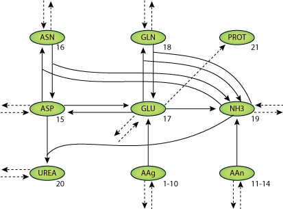

This CellML model runs in OpenCell and COR but does not exactly reproduce published results of figure 6
Human liver cell bioreactors are used in extracorporeal liver support therapy. To optimize bioreactor operation with respect to clinical application an understanding of the central metabolism is desired. A two-compartment model consisting of a system of 48 differential equations was fitted to time series data of the concentrations of 18 amino acids, ammonia, urea, glucose, galactose, sorbitol and lactate, measured in the medium outflow of seven liver cell bioreactor runs. Using the presented model, the authors predict an amino acid secretion from proteolytic activities during the first day after inoculation of the bioreactor with primary liver cells. Furthermore, gluconeogenetic activites from amino acids and/or protein were predicted.
The original paper reference is cited below:
'Dynamic Model of Amino Acid and Carbohydrate Metabolism in Primary Human Liver Cells', Reinhard Guthke, Wolfgang Schmidt-Heck, Gesine Pless, Rolf Gebhardt, Michael Pfaff, Joerg C. Gerlach, and Katrin Zeilinger, 2006, N. Maglaveras et al. Eds. ISBMDA, 137-149.
|  |
| Structure of the model Equations. |